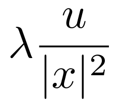
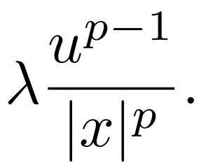

David Arcoya1, Jesús García Azorero2,
Ana Primo2 y Fernando Soria2
1Universidad de Granada,
2Universidad Autónoma de Madrid,
«Estelas en el mar». Con ese nombre tituló Ireneo Peral su conferencia de clausura del congreso internacional New trends in Partial Differential Equations celebrado en Granada en mayo de 2017. Podía haber hablado de muchas cosas. Después de todo, el congreso se celebraba en su honor por su 70 cumpleaños y, por tanto, por su inminente jubilación. Habló de matemáticas, por supuesto, y por una vez nos habló también de él, de sus proyectos, de cómo había sido su vida hasta entonces y, sobre todo, de sus grandes pasiones: su familia, sus amigos, el trabajo. Ireneo falleció el pasado 16 de febrero y reproducir aquí lo que entonces nos contó sería la mejor forma de recordarlo, el mejor homenaje que ofrecerle. Pero esa es una tarea imposible y solo nos queda la opción de hacer un recuento, quizás de una forma desordenada, de lo que su vida y su obra han supuesto para aquellos que tuvimos la suerte de conocerlo.
En la página web personal de Ireneo de la Universidad Autónoma de Madrid se puede leer un poema de Borges, Los Justos. Dice así:
Un hombre que cultiva su jardín, como quería Voltaire./ El que agradece que en la tierra haya música./ El que descubre con placer una etimología./ Dos empleados que en un café del Sur juegan un silencioso ajedrez./ El ceramista que premedita un color y una forma./ Un tipógrafo que compone bien esta página, que tal vez no le agrada./ Una mujer y un hombre que leen los tercetos finales de cierto canto./ El que acaricia a un animal dormido./ El que justifica o quiere justificar un mal que le han hecho./ El que agradece que en la tierra haya Stevenson./ El que prefiere que los otros tengan razón./ Esas personas, que se ignoran, están salvando el mundo.
Ireneo era una persona sensible y seguro que estos versos le ayudaban a expresar mejor el sentido de la vida tal como él la percibía. Su carácter le hacía ser optimista por naturaleza, alguien que busca la felicidad, la suya y, a ser posible, la de los que le rodean. En una de las transparencias de su charla en Granada nos mostró a modo de decálogo lo que para él significaban las Matemáticas desde un punto de vista muy personal. De forma breve, decía lo siguiente:
Optimismo -y buen humor- son solo algunos de los rasgos que mejor describen a Ireneo. Pero hay muchos otros, como humildad, sencillez, generosidad y, muy especialmente, el sentido del agradecimiento, que van unidos a su persona. Consideraba que la relación humana se debe cimentar necesariamente en ser agradecido . Y así lo hizo mencionando a sus padres, a sus hermanos, a su esposa y compañera de tantísimos años, Magdalena Walias, a sus hijas, a sus nietos y a sus colegas. En otro de los puntos sobre su visión personal de las Matemáticas que mencionó en la ya citada charla de Granada en 2017, Ireneo escribe:
Creo que he sido muy afortunado de haber conocido a matemáticos del más alto nivel humano y científico, que me han enseñado a trabajar. Entre ellos quiero mencionar a cuatro de ellos que me han ayudado directamente en mi vida profesional: Antonio Ambrosetti, Lucio Boccardo, Luis Caffarelli e Yves Meyer.
Esta misma referencia a los que él llamó más tarde mis «maestros» 3 aparece en el prólogo del libro que estaba terminando de corregir cuando la enfermedad le sorprendió ([29]). Quería poner a todos los que le habían ayudado de una forma u otra y sufría con la idea de olvidarse de alguien. En este artículo hemos querido dar la palabra a sus maestros para que nos hablen de sus recuerdos sobre Ireneo. Esta nota concluye con las reseñas de cada uno de ellos. Desgraciadamente, Antonio Ambrosetti falleció en noviembre de 2020 y no podrá participar en este homenaje. Ambos colaboraron en numerosos trabajos de investigación, en la organización de congresos y escuelas de verano, compartieron estudiantes e, incluso, Antonio Ambrosetti fue nombrado Doctor honoris causa por la Universidad Autónoma de Madrid, siendo Ireneo su padrino. Su profunda amistad rebasaba los límites académicos. Era entrañable escuchar sus charlas futbolísticas o culinarias. Las familias de ambos mantenían una estrecha relación que, a pesar de su ausencia, persiste aún hoy en día. A la muerte de Antonio, fue Ireneo, junto con David Arcoya, el encargado de elaborar la reseña publicada en La Gaceta para recordar su figura ([13]).
También hemos pedido a su familia, en la figura de su hermano Juan Carlos, que nos de una visión más cercana de nuestro querido Ireneo. A todos ellos les damos las gracias por su generosidad al aceptar la petición que les hemos hecho llegar y unimos sus escritos a este homenaje que nunca nos hubiera gustado hacer de forma tan temprana.
La tesis doctoral de Ireneo, defendida en 1974, versó sobre la Teoría de Diferenciación de Integrales, una incipiente área del Análisis que había llegado a España de la mano de su director, Miguel de Guzmán. Este a su vez había sido estudiante de Alberto Calderón, uno de los fundadores, junto a Antoni Zygmund, de la llamada Escuela de Análisis de Chicago. Además de publicar varios artículos que relacionaban convergencia con acotaciones débiles del operador maximal asociado, Ireneo fue el co-organizador de los dos primeros congresos de Análisis Armónico de El Escorial que, de forma ininterrumpida, se vienen celebrando desde entonces cada cuatro años en este lugar de la sierra de Madrid. El primero lo organizó conjuntamente con Miguel de Guzmán, el segundo con José Luis Rubio de Francia. Esta faceta como analista armónico duró poco porque enseguida su atención giró hacia el mundo de la ecuaciones en derivadas parciales no lineales. Sin embargo, en muchos de sus artículos posteriores se puede apreciar su manejo en esa área, especialmente a la hora de utilizar argumentos de tipo geométrico, como los lemas de cubrimiento o la descomposición de Calderón-Zygmund.
A lo largo de su dilatada carrera, Ireneo se interesó por muchos temas distintos dentro de la ecuaciones en derivadas parciales no lineales. Se sentía especialmente orgulloso de sus resultados en problemas relacionados con el potencial de Hardy; de hecho, como ya se ha mencionado anteriormente, la enfermedad le sorprendió mientras terminaba de corregir las pruebas de imprenta de su libro sobre este tema, Elliptic and Parabolic Equations Involving the Hardy-Leray Potential ([29]). El libro, escrito conjuntamente con Fernando Soria, recoge una gran parte de su obra. Fue terminado de corregir y publicado a principios de 2021.
Pero antes de llegar al potencial de Hardy, hubo mucho trabajo previo. Por ejemplo, Ireneo siempre recordó con especial cariño un trabajo con Julián Aguirre, sobre soluciones periódicas para la ecuación de ondas (ver [7]). Luego, en 1985, se embarcó en la dirección de la tesis doctoral de Jesús García Azorero. Y, como siempre, lo hizo de forma entusiasta, proponiendo problemas, proporcionando referencias y ayudando con una guía constante y eficaz. El objetivo inicial fue conseguir una cierta soltura con los métodos variacionales a través de un operador que entonces empezaba a estar de moda, el p-laplaciano, definido por
Dado el problema
Estos resultados generalizaban lo demostrado por Brezis-Nirenberg en el caso lineal p = 2. Pero, viendo el rango de parámetros, resultaba natural plantearse un caso más: el problema crítico cuando el término de perturbación satisface 1 < q < p. Es decir, el equivalente a añadir una potencia cóncava en el caso lineal. En este caso, mediante un sencillo truncamiento, se pudo probar que para valores pequeños de λ el término dominante era lo que inicialmente se veía como un término de perturbación, y era posible aplicar la teoría minimax para demostrar la existencia de infinitas soluciones (una de ellas positiva), todas con energía negativa.
Este resultado de multiplicidad de soluciones en un problema crítico era interesante, pero claramente mejorable: dejaba la puerta abierta al estudio de la existencia de soluciones con energía positiva. En cualquier caso, junto con otros resultados (por ejemplo, la prueba del comportamiento asintótico de la sucesión de autovalores del p-laplaciano obtenidos a partir de la teorías de Lusternink-Schnirelman, o el estudio de problemas con crecimiento exponencial cuando p = N) Ireneo consideró que era material suficiente como para dar por concluída una tesis doctoral, que fue defendida en 1989, con el habitual y comprensible alivio tanto del alumno como del director, y cuyos resultados se recogen en varias publicaciones (entre ellas [24, 25]).
Era bastante evidente que el resultado para el problema crítico con 1 < q < p aún dejaba un amplio margen de mejora y unos años después aparecieron dos avances fundamentales. Por un lado, durante una visita de Lucio Boccardo a España en la primavera de 1991, Ireneo, Lucio y otro de sus amigos, Miguel Escobedo, escribieron el trabajo [16] donde, vía el método de sub-super soluciones, probaban para valores pequeños del parámetro λ > 0 la existencia de solución positiva incluso en problemas supercríticos. De otro lado, este resultado fue presentado por Lucio Boccardo en un congreso celebrado en Erice, Italia y captó la atención de A. Ambrosetti, H. Brezis y G. Cerami, quienes, usando un elegante argumento de reducción al absurdo y sin salirse del caso p = 2, consiguieron demostrar la existencia de una segunda solución positiva 4 y de paso, acuñaron el término cóncavo-convexo que desde entonces ha pasado a ser la manera habitual de referirse a estos problemas.
La visita anteriormente reseñada de Lucio Boccardo a Madrid fue también el germen de otra relación importante de Ireneo al ponerle en conocimiento de la existencia de un joven matemático en la Universidad de Granada, David Arcoya, que había trabajado en Italia con Antonio Ambrosetti y el propio Boccardo. Ireneo tomó nota inmediatamente y, tras cursar una invitación a David para una visita a la Autónoma, comenzó un estrecha relación de tutelaje del incipiente grupo de Granada-Almería, facilitando su desarrollo hasta llegar a ser el que hoy en día conforman el propio David Arcoya, José Carmona, José Luis Gámez, David Ruiz y Salvador Villegas, junto con sus respectivos estudiantes.
Ciertamente, el mundo cóncavo-convexo se reveló mucho más rico de lo sospechado inicialmente, y dio lugar a una serie de trabajos que tuvieron una repercusión considerable, al menos si aceptamos como unidad de medida el número de citas, algo que Ireneo miraba habitualmente con un cierto escepticismo. Siempre decía que lo importante era valorar los resultados, y no usar los rankings para evitar la fastidiosa tarea de pensar. Pero en paralelo, otros muchos problemas captaron la atención de Ireneo. En particular, en la tesis de Juan Antonio Aguilar (presentada en 1998), comenzaron a explorar el efecto de la presencia de potenciales singulares en el término de reacción, tanto en el caso parabólico como en el caso elíptico, estudiando ecuaciones del tipo ut − Δpu = λV (x)f(u) y sus correspondientes estados estacionarios. Cuando V (x) = |x|−γ (y, por supuesto, el dominio donde se plantea la ecuación es un entorno del origen de coordenadas) descubrieron y analizaron una rica variedad de fenómenos, dependiendo de las relaciones entre los parámetros característicos del problema, N,λ,γ y p, y también de los diferentes términos de reacción f(u). Un trabajo muy completo, a la vez que muy meritorio, que dio lugar a numerosos artículos (entre ellos [6]) y que fue realizado mientras Juan Antonio desempeñaba con éxito su vida profesional en la empresa privada, robando horas al sueño para estudiar las matemáticas que tanto le apasionaban. Ireneo, al igual que todos nosotros, sintió profundamente su prematura muerte, en plena juventud.
El trabajo de Ambrosetti-Brezis-Cerami antes citado fue muy influyente para Ireneo, por varios motivos. De un lado, porque intentar la extensión de las pruebas allí contenidas al caso p≠2 requería de unos resultados de regularidad, que obtuvo en colaboración con otro gran matemático y amigo, Juanjo Manfredi, y con Jesús García Azorero ([22]). Pero sobre todo, porque a raíz de la aparición de ese artículo Ireneo invitó a Antonio Ambrosetti a visitar el Departamento de Matemáticas de la Universidad Autónoma. Esta primera visita de Antonio tuvo un impacto fundamental en el desarrollo matemático de Ireneo y de todo su grupo de colaboradores, con una producción científica conjunta de considerable interés (veánse [8-12]). Pero sobre todo permitió iniciar una amistad personal sincera y profunda que se mantuvo a lo largo de los años. Antonio se sentía especialmente cómodo con la cálida acogida y el ambiente familiar que Ireneo supo crear en su entorno. Esa amistad se tradujo en un contacto permanente y los sucesivos viajes en las dos direcciones permitieron también a Ireneo hacerse un hueco importante en los grupos de investigadores italianos, donde era realmente muy querido.
En aquella época, el flujo de visitantes en el departamento de matemáticas de la Autónoma era constante. En varias etapas tuvo el lujo de acoger como visitante de larga duración al profesor Grigory Barenblatt. Durante los almuerzos en el comedor de la facultad, Barenblatt era habitualmente el centro de la conversación. Entre anécdota y anécdota, siempre estaba comentando nuevos modelos, proponiendo cuestiones originales e interesantes. Una de estas conversaciones captó pronto la atención de Ireneo, que para entonces ya había comenzado a leer trabajos relacionados con cuestiones de homogeneización: la idea era estudiar un problema de contorno para el laplaciano, u otro operador elíptico, con la particularidad de que las condiciones de frontera eran de tipo mixto Dirichlet-Neumann, y el objetivo final era ir moviendo estas condiciones de frontera de una manera uniforme, haciendo que la medida del subconjunto con condición de Dirichlet fuera tendiendo a cero a la velocidad adecuada. Aquí surgieron cuestiones muy interesantes de falta de regularidad, que fueron cuidadosamente estudiadas en la tesis doctoral de Eduardo Colorado, junto con problemas tanto elípticos como parabólicos en los que aparecía un operador singular, −Δp,γu = −div(|x|−pγ|∇u|p−2∇u), relacionado con las desigualdades de Caffarelli-Kohn-Nirenberg (CKN) y reflejado en un trabajo inicial en dicha línea ([19]). Animado por Ireneo, Eduardo Colorado viajó a Trieste (Italia) a realizar una estancia postdoctoral bajo la dirección de Antonio Ambrosetti, hecho que a Ireneo le hizo muy feliz.
Una vez abierta la caja de los potenciales singulares, inmediatamente se lanzó a estudiar los que serían unos de sus problemas favoritos: los problemas relacionados con el potencial de Hardy. En su reciente libro [29] escribe:
El potencial de Hardy tiene algo fascinante, puede complicar enormemente los cálculos pero al mismo tiempo proporciona un conjunto muy rico de propiedades adicionales. En ese sentido es a la vez un monstruo y un amigo.
De hecho hay una sección titulada «Dónde (y por qué) aparece el monstruo», en la que se explica la importancia de este objeto matemático.
En su primer trabajo en esta área, en colaboración con Jesús García Azorero (ver [26]), la idea inicial fue intentar entender los resultados del célebre trabajo de Baras-Goldstein sobre blow-up instantáneo y completo en una ecuación del calor con término de reacción  (con λ > (N − 2)∕2), y extenderlos al correspondiente problema con el p-laplaciano, donde por cuestiones de homogeneidad el término de reacción pasaba a ser  Una vez más, la presencia del parámetro p permitió estudiar fenómenos muy interesantes, especialmente en el caso 1 < p < 2, en el que para λ > (N − p)∕p el blow-up resultó no ser tan drástico como en el caso lineal, y algunas normas permanecían acotadas. De este modo, se abrieron muchos problemas que requerían nuevas ideas, cuyo estudio recibió el impulso inestimable de la incorporación de nuevos miembros al grupo de investigación. Así en Noviembre de 1997, llegó Boumediene Abdellaoui a Madrid. Era el primer estudiante argelino en venir a realizar una tesis de Matemáticas a España. Se puso en contacto con Ireneo, quien amablemente le recibió (en francés) y le orientó acerca de los cursos de doctorado. También le ayudó con sus problemas administrativos y le propuso asistir al curso de Jesús García Azorero sobre ecuaciones cuasilineales. Al terminar, Boumediene estaba convencido de querer empezar una tesis en Ecuaciones, y volvió a llamar a la puerta de Ireneo para pedirle un problema. Le quedaban solo dos años de beca y «tenía miedo de no llegar», le dijo. Ireneo, con su energía y entusiasmo característico, le contestó: «ese es el primer signo de que lo conseguirás, solo tienes que trabajar». Fue el comienzo no solo de una tesis doctoral, sino de una colaboración muy fructífera que dio lugar a muy buenos teoremas hasta el final. Ireneo era el investigador responsable de un proyecto de cooperación científica con Argelia financiado por la Agencia Española de Cooperación Internacional, y periódicamente se veían por el Departamento estudiantes argelinos que venían a aprender con él. A día de hoy, Boumediene Abdellaoui mantiene vivo este legado con la hermosa tarea de formación de doctores en la Universidad de Tlemcen.
Boumediene comenzó a leer el artículo de Brezis-Cabré acerca del potencial de Hardy 5, con la intención de extenderlo al p-laplaciano. Pero los argumentos usados en el caso lineal, no se aplicaban al caso quasilineal. Ese fue el primer encuentro con la identidad de Picone, una herramienta muy útil que permitió obtener resultados importantes (tanto para ecuaciones elípticas como parabólicas cuasilineales).
El objetivo principal de la tesis era estudiar problemas cuasilineales con peso de tipo CKN y
términos singulares. Analizar la existencia o la no existencia de soluciones puede dar lugar a
bastantes situaciones sorprendentes dependiendo de la relación entre el peso y el término
singular. La filosofía de Ireneo era simple:
En Septiembre de 2002, llegó, procedente de la Universidad de Salamanca, otra estudiante para hacer los cursos de doctorado, Ana Primo. De nuevo, Ireneo con su gran capacidad de acogida, se ofreció a ayudarla con el papeleo de la beca FPU del MECD, y tras los cursos de doctorado, le propuso el problema de estudiar la influencia conjunta de un término gradiente, tanto en el lado de absorción como de reacción, con el potencial de Hardy:
Por un lado, si el gradiente está en el lado derecho de la ecuación,
Por otro lado, si el gradiente aparece en el lado izquierdo de la ecuación,
La importancia de este resultado estaba en el fuerte efecto regularizante del gradiente, ya que en un trabajo de Boccardo, Orsina y Peral ([17]) de 2006 se prueba que para todo λ > 0, la ecuación
|
| (1) |
no tiene en general solución para una función positiva f ∈ L1(Ω). A Ireneo le gustaba especialmente este resultado (que puede verse en [3, 4]). En la tesis se estudiaron también en profundidad los correspondientes resultados en el mundo parabólico (véase [5]).
Cuando las cuentas se atascaban, Ireneo siempre sugería parar unos días y cambiar tanto el punto de vista como los argumentos. Cuando no llevaban al resultado esperado, él disfrutaba: «mejor, más interesante, aquí puede haber nuevas ideas. Cuando estudias un problema, tienes que ir viendo el paisaje». Ireneo se caracterizaba por ser un empuje para seguir. No habíamos terminado un problema, y ya estaba proponiendo otro. Así ocurrió en 2004 durante una visita de Andrea Dall’Aglio a la UAM. Andrea trabajaba en problemas con dependencia del gradiente y datos generales y dio un seminario en el Departamento, en el que expuso problemas abiertos en el tema, en particular, habló sobre los cálculos radiales de Ferone-Murat para el problema con gradiente cuadrado en la bola: al hacer el cambio de Hopf-Cole, aparece la medida de Dirac en el cero. Con su enorme capacidad de inferir nuevos problemas, Ireneo sugirió pensar qué sucedería con otras medidas, haciendo el cambio al revés. Así surgió la idea de clasificar las soluciones poniendo en el lado derecho de la ecuación medidas singulares con respecto a la capacidad, dando lugar a un resultado de multiplicidad entre Andrea, Ireneo y Boumediene ([1]).
Ireneo tenía una mentalidad muy abierta. El mundo de las Matemáticas era una gran familia para él y siempre insistía a sus estudiantes en discutir con otros matemáticos, intercambiar ideas, viajar, trabajar con gente distinta…Así que, empezando a analizar problemas en esta dirección, surgieron muchas colaboraciones con otros colegas como Magdalena Walias, Daniela Giachetti, Veronica Felli, Lucio Boccardo, Sergio Segura de León, Alessio Porretta, Anna Mercaldo, Tommaso Leonori y muchos otros.
En 2007, se celebró en Salamanca un Congreso homenaje por su 60 cumpleaños. Ireneo estaba muy contento de que fuera en la ciudad de sus inicios, de la que siempre decía con cariño que la sentía como la Pisa española y se lamentaba de no haber impartido allí algún curso: «nadie es profeta en su propia tierra», decía.
Aparte de los trabajos con sus estudiantes de doctorado, Ireneo mantuvo colaboraciones con colegas, algunos ya citados, a los que siempre consideró amigos. De hecho, en la cena oficial de dicho Congreso de Salamanca (celebrada en el impresionante salón del Colegio Fonseca) él mismo lo reconoció con unas breves y emocionadas palabras, feliz por verse rodeado por los que consideraba sus amigos, más allá de colegas o colaboradores. Entre todas estas colaboraciones hay dos de las que siempre se mostró especialmente orgulloso. Por un lado, un artículo con Juan Luis Vázquez ([30]), mencionado en el preámbulo de su libro en De Gruyter con un agradecimiento por esta colaboración. Por otro lado, un trabajo con Luis Caffarelli ([18]), en el que se obtenían estimaciones W1,p para las soluciones de familias de operadores elípticos muy generales, combinando un resultado de regularidad para un operador fijo A0 con una cuidadosa comparación local entre problemas relacionados, y finalmente una descomposición de tipo Calderón-Zygmund. Un bonito resultado con aplicación en problemas de homogeneización. Ireneo siempre decía que lo más estimulante era trabajar con compañeros que le exigían salir fuera de su zona de confort matemática y llegar a límites para él inexplorados. Este trabajo con Luis Caffarelli era sin duda uno de sus favoritos.
La idea de pasar al límite en problemas dependientes de un parámetro, en busca de comportamientos extremos, fue explorada en una dirección distinta en la tesis doctoral de otro de sus estudiantes, Fernando Charro, defendida en 2009. Juntos estudiaron cómo pasar al límite en la familia de problemas de Dirichlet −Δpu = λuq con q < p, cuando p →∞ y el resto de parámetros crecen de forma adecuada, con q∕p → Q ∈ (0,1) y λ1∕p → Λ > 0. Con estas velocidades de convergencia, en el límite encontraron soluciones viscosas de un problema completamente no lineal, mın{|∇u|− ΛuQ,−Δ∞u} = 0. Una interesante manera de combinar teoría variacional con las soluciones de viscosidad, y un primer encuentro con el operador ∞-laplaciano, −Δ∞u = −∑ i,juxiuxjuxixj, que obligaba a salir fuera del mundo variacional, y que más adelante fue uno de los muchos campos de colaboración con otro gran amigo, Julio Rossi (ver por ejemplo [23]). Gracias al apoyo de Ireneo, Fernando Charro pudo realizar durante su doctorado sendas estancias de investigación en Pittsburgh con Juanjo Manfredi y en Milan con Sandro Salsa y, una vez terminada la tesis, estancias postdoctorales con Luis Caffarelli en Austin y con Xavier Cabré en Barcelona.
Mientras se resolvía su solicitud de una beca postdoctoral Fulbright-MEC con la que a la postre se marcharía a EEUU con Luis Caffarelli, Ireneo le propuso a Fernando trabajar junto con Roberto Argiolas, un visitante italiano recién llegado, en una extensión del principio del máximo de Alexandroff-Bakelman-Pucci (ABP) al p-laplaciano. Este era un problema que ilusionaba a Ireneo y que ya había mencionado otra veces. Sin embargo, en esa ocasión, Ireneo se presentó con una cuenta manuscrita por él fechada casi diez años antes donde desarrollaba una prueba extremadamente elegante de la ABP para el p-laplaciano en el caso de soluciones regulares. Estas ideas resultaron ser tremendamente versátiles y permitieron crear un marco común para probar estimaciones de tipo ABP para operadores no lineales elípticos y parabólicos muy generales, incluyendo no solo el p-laplaciano sino también los operadores de curvatura prescrita y k-Hessianos ([14]).
En noviembre de 2007 llegaba a Madrid Luigi Montoro, un estudiante italiano. Luigi estaba trabajando en SISSA, Trieste, con Andrea Malchiodi en un problema elíptico de tipo perturbativo, con condiciones mixtas en la frontera. Andrea le comentó a Antonio Ambrosetti que Ireneo estaba interesado en el mismo tipo de problemas. Entonces, en noviembre de 2007, Ambrosetti habló con Ireneo y Luigi marchó a la UAM, donde Ireneo, amabilísimamente, le dio la bienvenida en italiano. Junto con Jesús García Azorero y Andrea Malchiodi estudiaron el problema perturbativo mixto (ver [21])
|
|
analizando la existencia de soluciones del tipo spike layers, que se concentran en la interfaz ℐΩ, intersección de las clausuras de los dos conjuntos, ∂𝒟Ω y ∂𝒩Ω, en los que se divide la frontera, y estudiando también el comportamiento y análisis cualitativo de las soluciones de mínima energía. En palabras de Luigi,
El trabajo de esta tesis estuvo siempre acompañado y motivado por el entusiasmo de Ireneo. Él decía: «la Matemática es una ciencia experimental», es necesario probar y probar siempre. Cada día, por la tarde, cansado y feliz concluía «Mañana más pero no mejor, porque es imposible». El año 2007 no fue solo el principio de una tesis doctoral, sino de una colaboración larga, fructífera y constante hasta el final con resultados matemáticos óptimos y también resultados de vida, que Ireneo enseñaba gratuitamente con amor y respeto.
En 2009, Ireneo incorporó una estudiante más, Susana Merchán, a través de una beca FPI de su proyecto. Susana había hecho un Trabajo Fin de Máster con Ireneo sobre el problema de Kardar-Parisi-Zhang aunque el tema de su tesis giró en torno a la existencia de soluciones para problemas elípticos y parabólicos con el potencial de Hardy. Susana realizó una estancia predoctoral en la Universidad de la Calabria junto a Luigi Montoro y Berardino Sciunzi que dio lugar a una fluida colaboración con este equipo de matemáticos ([27]). Ireneo tuvo un especial interés en que sus alumnos mantuvieran una estrecha relación de trabajo, incluso terminada la tesis. De esa forma creó una pequeña escuela cuya semilla ha germinado y se mantiene intacta hasta hoy. En ese sentido, Susana, trabajó con Boumediene Abdellaoui y, junto a Ahmed Attar, produjeron varios artículos de un alto nivel.
A finales de 2009 Begoña Barrios, que inicialmente iba a hacer su tesis en Análisis Armónico, atraída por la relación entre esta área y las EDP comenzó a estudiar bajo la dirección de Fernando Soria diversos temas en el campo de los operadores no locales en un momento en el que dicha teoría se expandía a gran velocidad. Fernando, que había trabajado con Luis Caffarelli y Juan Luis Vázquez en la ecuación de los medios porosos con difusión no local, le propuso a Ireneo codirigir la tesis, algo que aceptó de inmediato. Ireneo, con su alegría habitual y encantado de formar parte de ello, entró un día en el despacho de la que sería su nueva alumna y le dijo «Fernando me ha hablado de ti, mañana nos vemos en mi despacho y verás qué bien lo vamos a pasar». Y no se equivocó. Este fue el comienzo de una frenética actividad científica por parte de Ireneo que le llevó a producir en un periodo de pocos años junto a sus estudiantes y colaboradores más de 20 artículos sobre problemas relacionados con difusión no local.
Pero volviendo a la tesis, uno de los primeros trabajos que estudió Begoña analizaba el problema crítico cóncavo–convexo con condiciones de Dirichlet cero para el laplaciano fraccionario espectral Asu(x) := ∑ ρjsajφj(x), x ∈ Ω, siendo u(x) = ∑ ajφj(x), x ∈ Ω y (φj,ρj) las autofunciones y autovalores del laplaciano (−Δ) en Ω con condiciones Dirichlet cero. Este resultado motivaría el estudio del mismo problema para el operador definido como integral singular unos años más tarde. El siguiente, desarrollado en gran parte durante la estancia predoctoral de Begoña Barrios en la Università degli Studi di Milano Statale con Enrico Valdinocci, versó sobre un argumento de regularidad tipo bootstrap para operadores integro-diferenciales generales
No todos los trabajos de Ireneo de esta época están relacionados con difusión fraccionaria. En este periodo mantiene una intensa colaboración con Carlos Escudero sobre diversos problemas de la Física relacionados con crecimiento epitaxial así como sobre ecuaciones en derivadas parciales de cuarto orden conjuntamente, entre otros, con Fillipo Gazzola.
En noviembre de 2011 comenzaba su doctorado la que sería la última estudiante de Ireneo, María Medina. Aunque inicialmente esta tesis iba a girar en torno a los operadores de cuarto orden y su interacción con diversas no linealidades, el auge de los fenómenos no locales hizo a Ireneo proponer un cambio en la temática del trabajo. De la mano de Begoña Barrios, que aún era estudiante, ambas comenzaron a estudiar el efecto del potencial de Hardy fraccionario en problemas con el laplaciano fraccionario como operador principal. Esta colaboración culminó en dos trabajos, uno en el que se revisitaba el clásico problema cóncavo-convexo en este marco no local, y un segundo donde se consideran términos singulares en la frontera, teniendo así ecuaciones doblemente singulares. El siguiente paso consistió en estudiar la regularidad de las soluciones de estos problemas con el potencial de Hardy no local en función de la regularidad de los datos. Este análisis derivó a su vez en otros dos trabajos, uno elíptico y otro parabólico, en colaboración con Boumediene Abdellaoui y Ana Primo.
Ha quedado claro que para Ireneo la movilidad internacional era fundamental en la formación de sus estudiantes. No lo fue menos en el caso de María Medina. Así, a lo largo de su tesis María llevó a cabo estancias de formación, primero en la University of Pittsburgh, bajo la supervisión de Juan J. Manfredi, y luego en el Weierstrass Institute for Applied Analysis and Stochastics (WIAS) de Berlín. En esta última, ya en tercer año de doctorado, María tuvo la oportunidad de colaborar con Enrico Valdinoci y Serena Dipierro y comenzar a estudiar los llamados fenómenos de concentración y los métodos de reducción finito-dimensional ([20]). Este trabajo supuso el final de la tesis de María, pero el inicio del que sería el tema principal de su investigación posdoctoral.
Como ha quedado reflejado en lo que a la recopilación de los trabajos de sus alumnos se refiere, la dirección de tesis ocupó gran parte de la vida académica de Ireneo. Se involucró en ello, tanto en lo profesional como en lo personal, como pocos lo han hecho. Sus alumnos terminaban sus tesis con un importante bagaje de artículos bajo el brazo. Pero también con la sensación de pertenecer a una familia, la de Ireneo y Magdalena, que les recibía con los brazos abiertos, les ayudaba con sus necesidades del día a día, especialmente a los que no eran de Madrid, celebraba con ellos sus alegrías y les animaba en sus penas, cuando alguna vez las padecieron. Ireneo siempre estaba disponible para ellos y para cualquier otro invitado que llegara al departamento. Creía y defendía la universidad pública de calidad y puso de su parte, como investigador, docente y gestor, todo lo que estuvo en su mano para lograr que la suya lo fuera. Un día calculó la distancia que había recorrido yendo al departamento en sus más de 40 años de servicio en la Universidad Autónoma de Madrid: le salieron cerca de 250.000 kilómetros. Cuando se jubiló, como pofesor emérito siguió añadiendo a estos unos pocos más. Tiene razón Borges, ‘esas’ personas están salvando el mundo.
Yves Meyer
École Normale Supérieure Paris-Saclay, Francia
La singular trayectoria de Ireneo Peral Alonso 6 se entiende mejor si se tiene en cuenta la situación de la investigación científica en España, a finales de los años 60, momento en el que Ireneo era estudiante. En esos años fue cuando la Escuela Matemática Española tomó impulso. La noche había sido profunda, larga y dolorosa. Sin embargo, algunos matemáticos españoles de la generación anterior habían procurado mantener la llama encendida. Tuve la suerte de coincidir con Ferran Sunyer i Balaguer en un congreso de análisis armónico en Oberwolfach en 1965, dos años antes de su muerte. Fue mucho más tarde cuando conocí a Alberto Dou.
España destacaba desde hacía tiempo por sus investigaciones en biología y medicina. La obra de Santiago Ramón y Cajal, completada por la de David Hubel, de Torsten Wiesel y de David Marr, conducirá a los trabajos revolucionarios sobre las redes de neuronas convolutivas de Yann Le Cun. El bioquímico Severo Ochoa se marchará de España en 1936 para emigrar a Estados Unidos, tras una breve estancia en Alemania. Ochoa se hizo ciudadano estadounidense en 1956. Renunció entonces a la ciudadanía española. Obtuvo el premio Nobel de Fisiología en 1959. Pero la España de los estudiantes y de los investigadores seguirá viva en su corazón. Así es como Ochoa y Alberto Sols fundaron en 1963, mucho antes del final de la noche, la Sociedad Española de Bioquímica y Biología Molecular. En 1971 Ochoa fue nombrado director del Departamento de Biología Molecular que acababa de crearse en la nueva Universidad Autónoma de Madrid. En 1975 Ochoa volvió definitivamente a España.
Pero regresemos a la matemáticas. En abril de 1964 Alberto Calderón impartía en la Complutense de Madrid un curso sobre Análisis de Fourier. Se fijó allí en un estudiante especialmente brillante. Era Miguel de Guzmán. Calderón se propuso dirigir la tesis de Miguel. Miguel pasó entonces cuatro años en Estados Unidos, para regresar en 1969. De vuelta a Madrid, Miguel creó un grupo de investigación muy activo, y dirigió numerosas tesis de doctorado, entre ellas las de Ireneo y Magdalena Walias. Algunos jóvenes matemáticos españoles siguieron el ejemplo de Miguel de Guzmán y marcharon a Estados Unidos para empezar una tesis. Otros estudiaron en Francia. Ese fue el caso de Ildefonso Díaz, que defendió su tesis en 1976 (directores Alberto Dou y Haïm Brezis), de Jesús Hernández, que defendió su tesis en 1977 (directores Haïm Brezis y José Antonio Fernández Viña) y de Juan Luis Vázquez que defendió la suya en 1979 (directores Ildefonso Díaz y Haïm Brézis). Ireneo elegió quedarse en España.
Antoni Zygmund admiraba el renacer de las matemáticas españolas. Pero le preocupaba que, en el campo del Análisis de Fourier, los jóvenes matemáticos españoles se especializaran en problemas que pudieran posteriormente resultar demasiado estrechos. Yo compartía la misma preocupación, pero pensaba que algunos de los alumnos de Miguel de Guzmán serían capaces de abandonar el puerto y salir a navegar en alta mar. Así hizo Ireneo. A Ireneo le gustaban los desafíos arriesgados. Hacia 1980, se decantó por el estudio de las ecuaciones en derivadas parciales no lineales. Tenía 34 años y acababa de ser padre. Algunos matemáticos españoles como Ildefonso Díaz, Jesús Hernández y Juan Luis Vázquez habían realizado su tesis en ese campo y llevaban ya un cierto tiempo trabajando en el estudio de las ecuaciones en derivadas parciales no lineales. Cuando Ireneo decidió trabajar en esa área redobló sus esfuerzos para alcanzar el nivel que se exigía a sí mismo, sin poder beneficiarse de los consejos y ánimos de ningún maestro. Como escribe Cervantes, cada uno es hijo de sus obras, y esto bien puede aplicarse a Ireneo.
Las ecuaciones en derivadas parciales son uno de los más bellos capítulos de las matemáticas. Constituyen una interfaz entre las matemáticas y el mundo que nos rodea. Sirven para modelizar los fenómenos físicos y predecir su evolución. Por ejemplo, las ecuaciones en derivadas parciales son esenciales en el estudio y comprensión del cambio climático. Profundizar en el conocimiento de la naturaleza requiere matemáticas bellas y difíciles. Así, los agujeros negros y las ondas gravitacionales han sido primero soluciones de ecuaciones en derivadas parciales. No fueron detectados hasta mucho después, el 14 de septiembre de 2015. Pero esta eficacia tiene un precio. En primer lugar, el problema estudiado debe ser de interés para la Física, o la Mecánica (o incluso otros campos del saber). Luego, la búsqueda de un modelo pertinente y de herramientas matemáticas adecuadas es a menudo una tarea difícil, que requiere una doble competencia, en Matemáticas y en Física. Puede ocurrir que el modelo venga directamente dado por la Física y que las herramientas necesarias vengan dictadas por las leyes de conservación. Pero rara vez sucede, y más a menudo el trabajo del matemático consiste en descubrir lo que podríamos llamar nuevas leyes de conservación e incluso nuevas leyes físicas. Es el caso de la simulación numérica de la combustión en los motores de cohetes: descansa por supuesto sobre las leyes fundamentales que rigen los flujos de fluidos y las leyes de la Química. Pero eso es todo, porque no existen todavía leyes propias de la combustión. Finalmente, el análisis matemático de una ecuación en derivadas parciales es el requisito previo indispensable para su resolución numérica. Esta requiere encontrar códigos de cálculo eficaces. Solo entonces puede el trabajo matemático desarrollado tener aplicaciones científicas o industriales. Jacques-Louis Lions fue capaz de llevar a cabo este programa científico en su globalidad. Saludemos su influencia en el renacer de las Matemáticas Aplicadas españolas.
Tras siete años de trabajo Ireneo estaba en condiciones de organizar, junto con Antonio Córdoba y Juan Luis Vázquez, una escuela de verano sobre ecuaciones en derivadas parciales (Encuentro internacional de ecuaciones en derivadas parciales). Tuvo lugar en la Universidad Menéndez Pelayo de Santander del 29 de junio al 3 de julio de 1987. Allí conoció Ireneo a Luis Caffarelli y Louis Nirenberg. Este último le aconsejó colaborar con la Escuela Italiana. Caffarelli le invitó al Institute for Advanced Study de Princeton.
Ireneo escribió 138 artículos. Muchos son notables, tanto por el interés de los problemas estudiados como por la belleza de las herramientas matemáticas utilizadas. Elijo tres, de manera un tanto egoísta. Some fourth order nonlinear elliptic problems related to epitaxial growth está escrito en colaboración con Carlos Escudero. Global existence versus blow-up results for a fourth order parabolic PDE involving the Hessian es la continuación del anterior y es un trabajo en colaboración con Carlos Escudero y Filippo Gazzola. En estos, Ireneo y sus colaboradores estudian de manera macroscópica el crecimiento epitaxial de una capa rugosa. Es un problema que proviene de la física–matemática y cuyas aplicaciones científicas e industriales son importantes. Las herramientas matemáticas utilizadas por Ireneo son absolutamente notables. Van del Mountain Pass Lemma, en la versión de Ambrosetti y de Rabinowitz, al teorema sobre la compacidad por compensación, que prolonga los resultados de Murat y Tartar y utiliza el espacio de Hardy H1. Ireneo está tan presente, tan vivo, en estos dos trabajos que me gustaría poder hablar todavía con él sobre ellos.
El tercer artículo del que deseo hablar es un trabajo en colaboración con Luis Caffarelli. Ireneo estaba entonces invitado (otoño 1992) por Caffarelli en el Institute for Advanced Study de Princeton. Utilizando de manera magistral el famoso lema de Calderón-Zygmund, Ireneo y Luis mejoraron las estimaciones W1,p para las soluciones de ecuaciones elípticas en forma de divergencia. Volvía así Ireneo a las herramientas aprendidas con Miguel de Guzmán.
Remonto un poco en el tiempo. Invitado, el 16 de diciembre de 1981, en el seminario Goulaouic-Schwartz de la École Polytechnique, Ireneo nos habló de sus resultados recientes sobre la ecuación de ondas no lineal. Su hija mayor, Irene, tenía dos años y su hija pequeña, Magdalena, uno. Estaba loco de felicidad por ser padre. Pero, me decía, eso le obligaba a mantener una disciplina estricta en la gestión del tiempo. Debía, siempre disfrutando de la presencia de sus dos hijas, intentar trabajar tanto como antes. En realidad estas nuevas obligaciones lo estimulaban. A Ireneo le gustaba enfrentarse a los desafíos. Y ¿qué decir de Ireneo abuelo? Su felicidad estalla en la fotografía que acompaña mi testimonio. Sus cuatro nietos: Iria, Óscar, Laura y Jaime lo llenaban de orgullo.
Durante cuarenta años Ireneo ha proseguido con coraje y entusiasmo sus investigaciones sobre las ecuaciones en derivadas parciales no lineales. Amaba compartir sus ideas y entre sus colaboradores encontramos tanto los mayores nombres (como Luis Caffarelli y Antonio Ambrosetti) como los más jóvenes y menos conocidos (como Boumediene Abdellaoui, que trabaja en Tlemcen, Argelia). Su alegría de vivir y su felicidad juvenil por crear, enfrentarse y resolver problemas matemáticos arduos eran tan fuertes que iluminaban su vida profesional. Cuando dejaba a Ireneo, tras pasar un día con él, recobraba ánimo, me sentía más fuerte y el mundo era más bello. Ireneo era muy sensible y atento con los demás y, al mismo tiempo, muy exigente. La amistad y la lealtad no podían desfallecer. Enseguida sentí una gran simpatía por la pareja que Ireneo formaba con Magdalena. Frecuentarlos me llevó a hacerme de España una idea diferente de la que tenía en mi juventud. Ireneo y Magdalena suavizaron mi visión maniquea (la de la izquierda francesa). Por la fuerza y la belleza de su trabajo de investigador y por el calor de su vida familiar, Ireneo me demostraba que una España diferente podía existir, una España que se le pareciese, realista y con talento, fuerte y generosa, liberada de los mitos del pasado.
Luis Caffarelli
University of Texas at Austin, EE.UU.
Nací y crecí en Buenos Aires una ciudad muy conectada con España. Después de la secundaria fui admitido en el Centro de Ciencias de la Universidad de Buenos Aires, que albergaba, entre otras, secciones de Matemáticas, Física y Química. Entre los profesores que impartían cursos avanzados había varios de un alto nivel científico que habían emigrado de España con motivo de la Guerra Civil. Gracias a estos tuve la oportunidad de recibir una educación científica muy sólida. Entre ellos se encontraba Luis Santaló, al que recuerdo con mucho cariño, que me ayudó a avanzar en geometría y análisis.
Realicé el doctorado en Buenos Aires y obtuve una beca posdoctoral para ir a Estados Unidos. En ese momento en Europa y EE. UU. existía una red internacional de científicos y, en particular, jóvenes y excelentes matemáticos en España involucrados con el Análisis Real y sus aplicaciones. A través de la Universidad Menéndez Pelayo en España y varias instituciones en los Estados Unidos integradas con ella (Instituto de Estudios Avanzados, el Instituto Courant, la Universidad de Chicago) desarrollé investigaciones comunes y conexiones con varios de estos matemáticos, como Juan Luis Vázquez, Antonio Córdoba, Fernando Soria o Rafael de la Llave. Y entre ellos también con Ireneo, un matemático igualmente brillante.
Cuando lo conocí, él era joven y, sin embargo, ya me pareció un científico con un profundo conocimiento de las propiedades estructurales del Análisis. Su trabajo a lo largo del tiempo ha consistido en estudiar ecuaciones que describen fenómenos naturales por un lado y que requieren estructuras matemáticas muy complejas por otro, lo que implica un esfuerzo considerable para superar esa complejidad. Personalmente siempre tuve una gran admiración por la comprensión matemática que poseía en su trabajo. Ireneo tenía una forma natural de avanzar a través de las dificultades de un problema matemático confrontando entre sí cada una de las posibles líneas estructurales que se podían presentar. De hecho, su trabajo es muy valorado como lo atestigua, por ejemplo, el gran número de menciones que ha recibido en sus artículos y que se pueden consultar en MathSciNet. No solo su obra tuvo cientos de citas, sino que estas citas han sobrevivido al paso del tiempo y aparecen en artículos actuales de revistas fundamentales. Para mí fue una enorme satisfacción que Ireneo, con el que ya había empezado a trabar una gran amistad, visitara el Instituto de Estudios Avanzados. De esta forma tuvimos la oportunidad de desarrollar ideas y nuevos métodos, algunos de los mejores que he encontrado en mi trabajo. Puedo decir que estoy muy orgulloso de esa colaboración que pude mantener con él.
Para completar el retrato de Ireneo en este breve escrito, me queda agregar su profundo sentido de humanidad. Como ya he dicho, habíamos desarrollado a lo largo de estos años una gran amistad compartiendo momentos agradables, expectativas comunes, celebraciones de felicidad. De hecho, nuestro último recuerdo es de hace unos meses, de visita en Madrid, disfrutando de una cena llena de felicidad con él y su esposa, Magdalena Walias, Ángeles Encinar y su esposo Fernando Soria e Irene Gamba, mi esposa. Todo discurría en un ambiente plácido, y en nuestra conversación nuestras matemáticas eran el presente, nuestros hijos eran el futuro. Él quedará grabado en nuestra memoria para siempre.
Lucio Boccardo
Sapienza Università di Roma, Italia
Ireneo, esta mañana vendré de nuevo a la Autónoma.
En la quinta planta, sobre la puerta de tu despacho, leeré «Sed breves con las malas noticias».
Hoy no tengo malas noticias. La última vez que vine, tenía una: Ireneo, no hemos ganado la Medalla Fields; tú me respondiste: la próxima vez intentaremos ser más jóvenes.
Hoy no tengo malas noticias. Empezaremos trabajando en la pizarra; después de un rato, me llevarás a la cafetería para un cappuccino: tú esperas que el café del cappuccino haga de mí un coautor de nivel Medalla Fields; no es verdad, pero me alegran el cappuccino y las charlas amistosas.
Hoy no tengo malas noticias, pero te desvelaré un secreto: fui el referee de tu artículo sobre Hardy; y estoy contento de haberlo sido. Pues continuaremos trabajando, como hacemos cuando estamos juntos: con serenidad, pasión por las EDP y con amistad entre nosotros.
Ireneo, estoy subiendo a la quinta planta.
Juan Carlos Peral
Universidad del País Vasco/Euskal Herriko Unibertsitatea
En estas líneas me referiré a mi hermano Ireneo, que nos dejó de forma prematura el día 16 de febrero de 2021. No entraré en su trabajo matemático porque otros, con mayor conocimiento del mismo, ya lo glosan en estas páginas.
Han pasado unos meses desde el fallecimiento de Ireneo, mi querido hermano mayor, y en este tiempo hay dos ideas que vuelven una y otra vez a mi mente y creo que reflejan bien mis sensaciones tras su inesperada muerte.
La primera se puede resumir con este verso de un poeta de la generación del 27:
Cuando yo vine al mundo, ya estaba todo hecho. (Luis Felipe Vivanco)
Para mí, su significado describe muy bien mis sentimientos sobre el papel tutelar y el profundo sentido familiar que mi hermano tuvo siempre y que yo experimenté desde la infancia. Ireneo, Ito como le llamábamos nosotros, era cuatro años mayor que yo y era el que en los lejanos tiempos de nuestra infancia y adolescencia, primero en Madrid, donde nacimos él, nuestra hermana María del Carmen y yo, y luego en Bercimuelle (Salamanca), donde nacieron los dos pequeños, Julián y Germán, era, como decía, el hermano mayor, el protector que cuidaba de mí en la escuela de Bercimuelle si algún chico osaba meterse conmigo. Más de uno se llevó un buen pescozón por intentarlo.
Compartíamos habitación y muchas veces desde su cama en voz alta hacía como si fuese un locutor de radio y relataba sus crónicas para que yo las escuchase, absolutamente embelesado, desde la mía. Podía tratarse de las victorias de su equipo de fútbol favorito, como es bien sabido el Real Madrid, o de relatos de la actualidad diaria o referencias a noticias importantes de aquellos tiempos, como el asesinato de Kennedy. Tras estos años, en Bercimuelle, Ireneo cursó sus estudios preuniversitarios y el primer curso de universidad en Salamanca. Se alojaba en una pensión de la calle San Justo. Curiosamente la misma calle en la que vivieron unos años nuestros abuelos paternos y nuestro padre, Ireneo, mientras comenzaba, también él, sus estudios de Exactas, como se decía entonces para referirse a las Matemáticas.
Durante ese curso en Salamanca sucedió algo fundamental en su vida: conoció a Magdalena, que era compañera de clase. Años después se casarían frente al bellisímo retablo de Nicolás Florentino en la catedral románica de Salamanca, más conocida como la Catedral Vieja. También en ese curso en Salamanca decidió que estudiaría matemáticas.
Las matemáticas eran algo natural en nuestra casa ya que nuestro padre, como licenciado en Matemáticas, tenía ejemplares del análisis de Goursat, de la geometría proyectiva de Enriques o de las gruesas tablas de logaritmos de Schron y otros muchos textos de la época, libros que aún conservamos. De vez en cuando nuestro padre nos daba clase en un viejo encerado negro mientras nuestra madre, María del Carmen, se ocupaba de la casa.
Esa elección de las Matemáticas hecha por mi hermano me acabó de decidir a mí también por la misma disciplina. Es decir, mi hermano ha supuesto no solo una especie de manto protector en mi infancia, sino también alguien que iba sirviendo de guía y abriendo camino en diferentes aspectos.
Creo que esto explica esa sensación que me trasmite el verso que citaba al principio, y que ahora transcribo de nuevo, cuando yo vine al mundo, ya estaba todo hecho, cuando pienso en mi hermano Ireneo.
Pasados estos años en Bercimuelle la familia volvió a Madrid, donde Ireneo siguió con el segundo curso hasta finalizar la licenciatura y luego entró en el Departamento que dirigía el padre Alberto Dou. Allí conoció a Miguel de Guzmán, recién llegado de Chicago, y con él hizo su tesis doctoral.
De su desarrollo profesional posterior se da cumplida cuenta en otros testimonios por lo que no insistiré en ello.
Sí mencionaré algo que me parece muy relevante, y es que fue capaz de compaginar su investigación, sus viajes y el mantenimiento de una amplia red de contactos con matemáticos de primera fila de varios países con su vida familiar, puesto que pronto nacieron Irene y Magdalena, sus queridísimas hijas. Después vinieron sus cuatro nietos: Iria, Óscar, Laura y Jaime. Los cuatro magníficos, como él solía decir, eran una auténtica pasión para Ireneo.
Durante esta época tuvo habilidad e inteligencia para reorientar su investigación y centrarse en cuestiones centrales de las EDP. Esto quiero destacarlo mucho, ya que supuso un esfuerzo personal muy importante. Desarrolló también una amplia labor de dirección y colaboración, como atestigua el amplio número de personas que de una u otra forma han colaborado y publicado con Ireneo. Era un trabajador incansable, de hecho los días previos a su hospitalización acabó de revisar las pruebas de imprenta de su libro con Fernando Soria, Elliptic and parabolic equations involving the Hardy-Leray potential, publicado recientemente.
Acabaré con esa segunda idea que mencionaba al principio. Cuando estos meses he tratado de buscar algún paliativo para la tristeza provocada por su muerte, lo único que venía una y otra vez a mi mente es que Ireneo vivió una vida intensa y plena, la vida que a él le gustaba, dedicada a su pasiones: la familia, las amistades y las matemáticas, siempre con entusiasmo, con alegría, con generosidad y con un inmenso goce de la vida.
Estos pensamientos son el único y escaso alivio que encuentro a la enorme pena producida por su muerte y rememorando a los clásicos acabo con estos versos:
|
... y aunque la vida perdió, dejónos harto consuelo su memoria. |
2.NE: Los artículos siguientes, dedicados a la figura del profesor Ireneo Peral Alonso, han sido publicados simultáneamente en el volumen 24, número 3 de La Gaceta de la RSME. Desde estas líneas, queremos agradecer a todos sus autores, así como a los editores de La Gaceta y al presidente de la RSME, el haber permitido la reproducción de los mismos en el presente Boletín.
3.Ireneo puede considerarse un autodidacta en muchos aspectos, especialmente en el origen de su trabajo en EDP. Creemos que esto es compatible no obstante con la profunda convicción que él siempre tuvo sobre el papel que jugaron estas personas en su trayectoria científica y con las que mantuvo una relación de amistad muy entrañable. Véase, por ejemplo, la entrevista que Ireneo realizó a Yves Meyer para La Gaceta con ocasión de la entrega a este del premio Abel en 2017 ([28]).
4.A. Ambrosetti, H. Brezis, G. Cerami, Combined Effects of Concave and Convex Nonlinearities in Some Elliptic Problems. J. Funct. Anal. 122 (1994), no.2, 519–543.
5.H. Brezis, X. Cabré, Some simple nonlinear PDE’s without solutions, Boll. Unione Mat. Ital., 1 (1998), 223–262.
6.No me hubiese sido posible escribir este homenaje sin la valiosa ayuda de Magdalena Walias, de Juan Carlos Peral y de Miguel Escobedo.